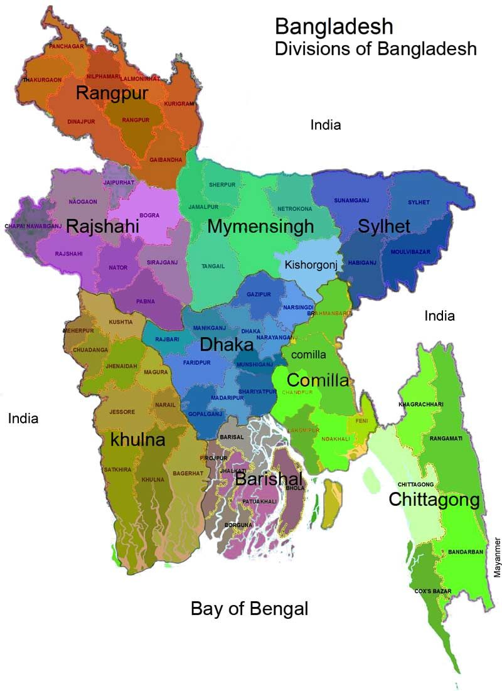

ALL NEWS
| NATIONAL | INTERNATIONAL | ENTERTAINMENT | SPORTS | OTHERS |
|---|

| TITLE | NATIONAL | INTERNATIONAL |
|---|---|---|
| RECOVERED | ******** | ******** |
| DIED | ******** | ******** |
| TOTAL | ******** | ******** |
Rolling updates on coronavirus disease (COVID-19) Updated 29 June 2020
WHO announced that the hydroxychloroquine (HCQ) arm of the Solidarity Trial to find an effective COVID-19 treatment was being stopped. The trial's Executive Group and principal investigators made the decision based on evidence from the Solidarity trial, UK's Recovery trial and a Cochrane review of other evidence on hydroxychloroquine. Data from Solidarity (including the French Discovery trial data) and the recently announced results from the UK's Recovery trial both showed that hydroxychloroquine does not result in the reduction of mortality of hospitalised COVID-19 patients, when compared with standard of care. Investigators will not randomize further patients to hydroxychloroquine in the Solidarity trial. Patients who have already started hydroxychloroquine but who have not yet finished their course in the trial may complete their course or stop at the discretion of the supervising physician. This decision applies only to the conduct of the Solidarity trial and does not apply to the use or evaluation of hydroxychloroquine in pre or post-exposure prophylaxis in patients exposed to COVID-19
North Korea says it has no plans for talks with US
SEOUL, South Korea (AP) — North Korea on Saturday reiterated it has no immediate plans to resume nuclear negotiations with the United States unless Washington discards what it describes as “hostile” polices toward Pyongyang. The statement by North Korean First Vice Foreign Minister Choe Son Hui came after President Donald Trump’s former national security adviser, John Bolton, told reporters in New York Thursday that Trump might seek another summit with North Korean leader Kim Jong Un as an “October surprise” ahead of the U.S. presidential election. South Korean President Moon Jae-in, who had lobbied hard to help set up the now-stalled negotiations between Washington and Pyongyang, also expressed hope that Trump and Kim would meet again before the election in a video conference with European leaders on Tuesday. Kim and Trump have met three times since embarking on their high-stakes nuclear diplomacy in 2018, but negotiations have faltered since their second summit in February last year in Vietnam, where the Americans rejected North Korean demands for major sanctions relief in exchange for a partial surrender of its nuclear capability. ADVERTISEMENT
Was new Chex flavor worth South Koreans’ 16-year wait?
SEOUL, South Korea (AP) — South Koreans have waited 16 long years for a savory, crispy bite that would satisfy their taste buds and right an infamous wrong. This week, they finally could fill a bowl with the cereal they wanted all along: green onion-flavored Chex. Kellogg’s Korea’s limited-edition flavor released this week, complete with a catchy ad and an apology for the wait, has taken on surprising cultural significance for an odd culinary experiment. In 2004, the company advertised a public vote for a new product: chocolate-flavored Cheki or green onion-flavored Chaka
AP sources: White House aware of Russian bounties in 2019

Top officials in the White House were aware in early 2019 of classified intelligence indicating Russia was secretly offering bounties to the Taliban for the deaths of Americans, a full year earlier than has been previously reported, according to U.S. officials with direct knowledge of the intelligence. The assessment was included in at least one of President Donald Trump’s written daily intelligence briefings at the time, according to the officials. Then-national security adviser John Bolton also told colleagues at the time that he briefed Trump on the intelligence assessment in March 2019. The White House didn’t respond to questions about Trump or other officials’ awareness of Russia’s provocations in 2019. The White House has said Trump wasn’t — and still hasn’t been — briefed on the intelligence assessments because they haven’t been fully verified. However, it’s rare for intelligence to be confirmed without a shadow of a doubt before it is presented to top officials.
Israeli, UAE technology firms pen deal on virus research
JERUSALEM (AP) — A state-linked technology company in the United Arab Emirates has signed a partnership with two major Israeli defense firms to research ways of combating the coronavirus pandemic. The agreement, announced late Thursday, comes just weeks after the UAE warned Israel that proceeding with its planned annexation of parts of the occupied West Bank would upend its efforts to improve ties with Arab states. G42, an Abu Dhabi-based company specializing in artificial intelligence and cloud computing, signed a memorandum of understanding with Rafael and Israel Aerospace Industries, the UAE’s state-run WAM news agency reported. It said executives held a signing ceremony by video link between the two countries, which do not have diplomatic relations.
Black-owned businesses see sales surge amid racism reckoning

BOSTON (AP) — When Mahdi Hashemian was looking for a bicycle for his 7-year-old daughter Zeynab last week, the Cambridge, Massachusetts, resident decided to skip his local cycle shops in favor of a Black-owned one a few miles away in Boston’s Dorchester neighborhood. At Spokehouse, a bike shop with “Black Lives Matter” painted in large bold letters outside, the pair picked out a simple, white-colored model and had training wheels and a white basket for its handlebars installed. Hashemian, who is set to earn his doctorate from MIT, said he’s been reminded in recent weeks of the outpouring of support he felt from the campus community when President Donald Trump imposed a ban on travelers from Muslim majority countries in 2017, including his native Iran
Botswana investigates ‘mysterious deaths’ of 275 elephants
GABORONE, Botswana (AP) — Botswana says it is investigating a staggeringly high number of elephant carcasses — 275 — found in the popular Okavango Delta area of the southern African nation in recent weeks. The Department of Wildlife and National Parks said it is mobilizing human personnel and aircraft to better understand the “mysterious deaths.” Samples have been collected for analysis at labs in South Africa, Zimbabwe and Canada and anthrax has been ruled out as the cause. “We have no reason to dispute the numbers reported and we are continuing to verify reports,” Lucas Taolo, the department’s acting director, told The Associated Press
Virus concerns grow — as do crowds flocking to Jersey Shore
BELMAR, N.J. (AP) — As coronavirus-related restrictions are eased and temperatures climb, people are flocking back to the Jersey Shore. And with the July Fourth holiday weekend upon us, that’s making some people nervous, particularly given the large crowds that have surfaced at some popular shore spots recently and poor compliance with mandated measures to help slow the spread of the virus. WHAT'S OPEN: – Jersey Shore at a glance as July Fourth comes amid pandemic “I am really concerned,” said Paul Kanitra, mayor of Point Pleasant Beach, a popular shore town that was unexpectedly overrun by thousands of tourists who swarmed the beach and boardwalk a few weeks ago at a “pop-up party,” paying little heed to social distancing or masks
Reps: Singers Kacey Musgraves, Ruston Kelly file for divorce
Musgraves has been a success since releasing her major-label debut album, “Same Trailer Different Park,” in 2013. It won her the best country album Grammy and one of its singles, “Merry Go ’Round,” won best country song. At the 2019 Grammys, the superstar’s critically acclaimed pop-leaning country album, “Golden Hour,” won all four awards it was nominated for, including the coveted top prize, album of the year. At the show, she thanked Kelly in her acceptance speech: “I really believe I wouldn’t have this album if I hadn’t met you and you didn’t open my heart like you did, so thank you so much.” Musgraves and Kelly have worked together musically. In 2018 they appeared on the song “To June This Morning” from the album “Johnny Cash: Forever Words,” a compilation project created from Cash’s unknown poetry, lyrics and letters set to music. Musgraves also sang background vocals on Kelly’s 2018 full-length debut album, “Dying Star.”
Move to rename ‘Bloody Sunday’ bridge has critics in Selma
Lowery’s younger sister Jo Ann Bland, who also was among the estimated 600 marchers on March 7, 1965, long opposed renaming the bridge. But amid widespread demonstrations since the police killing of George Floyd in Minnesota, she now tentatively supports renaming the span for local “foot soldiers,” not Lewis. “John Lewis is my hero; he’s been my hero since I was a child,” said Bland. “I followed him up on that Edmund Pettus Bridge. But I and John were not the only ones there.” The bridge was named for Pettus, who fought for the Confederacy and was a reputed KKK grand wizard who served in the U.S. Senate at a time when Jim Crow laws gave white people near-total control in Alabama. He died in 1907. On the day of the 1940 bridge dedication, which some 7,000 attended, a parade included a float depicting slaves. The town newspaper printed a laudatory biography which said Pettus was “devoted wholly to the upbuilding of our state and the bringing of order out of the chaos of carpetbaggery and negro dominance” after the Civil War. Online petitions to rename the bridge have been around since at least 2015, the year then-President Barack Obama and former President George W. Bush visited Selma to mark the 50th anniversary of Bloody Sunday, when state troopers beat voting rights marchers as they crossed the bridge on the way to Montgomery, the capital.